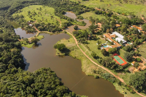
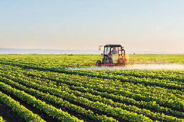
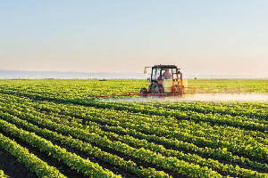

Bem-vindo à Jornada do Alimento!
Descubra o fascinante caminho que os alimentos percorrem, desde sua origem no campo ou em iniciativas urbanas até chegarem frescos e saborosos à sua mesa.
Neste site, exploraremos a importância da produção, distribuição e do consumo consciente para um futuro mais sustentável.

Origem dos Alimentos: Do Campo à Roça
A maior parte dos alimentos que consumimos vem do campo, de fazendas e sítios. Aqui, agricultores dedicam-se ao plantio de grãos, frutas, verduras e à criação de animais.
Vamos entender os diferentes tipos de produção e a importância da agricultura para nossa alimentação.
- Agricultura Familiar
- Grandes Lavouras
- Pecuária
A Cadeia Produtiva: O Caminho até a Mesa
Depois de produzidos, os alimentos passam por uma série de etapas para chegar até você. Isso inclui a colheita, o transporte, o processamento (em alguns casos) e a distribuição.
Entenda como essa complexa rede funciona para garantir que não falte comida.
Alimentos Urbanos: A Horta na Cidade
Nem todo alimento vem de longe! Cidades também produzem alimentos através de hortas comunitárias, pomares urbanos e iniciativas de agricultura em telhados e pequenos espaços.
Descubra como a agricultura urbana contribui para a sustentabilidade e para uma alimentação mais fresca.
Impactos da Produção e Consumo
A forma como produzimos e consumimos alimentos tem impactos significativos no meio ambiente e na sociedade. Desde o uso da água e agrotóxicos até a geração de resíduos e o desperdício.
Vamos refletir sobre esses impactos e a importância de escolhas mais responsáveis.
Consumo Consciente: Suas Escolhas Fazem a Diferença
Com pequenas atitudes no dia a dia, podemos contribuir para um sistema alimentar mais justo e sustentável. Escolha produtos locais, reduza o desperdício, e valorize a sazonalidade.
Saiba como você pode fazer a sua parte!
Galeria de Imagens
Confira fotos e ilustrações que mostram a beleza e a complexidade do caminho dos alimentos.
 
